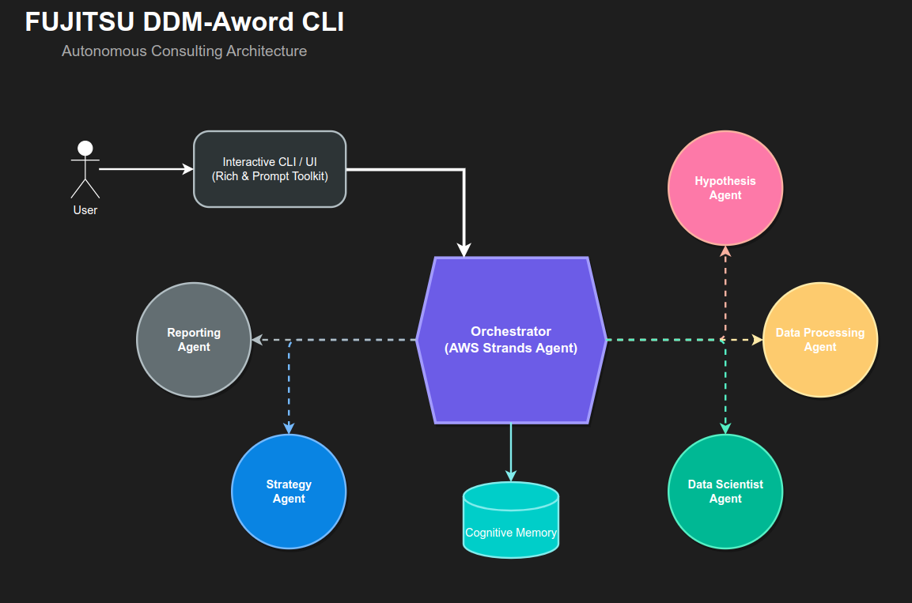

FUJITSU DDM-AWord CLI
認知科学と統計的検証に基づく自律型経営支援エージェント
AI Data-Driven Consulting
Ver. 2.0.0
Executive Summary
「データの裏付け（エビデンス）に基づいた、実行可能な経営戦略」を導き出す、次世代のAIコンサルティングツール。
単なる対話型AIではなく、「仮説立案 → データ加工 → 統計的検証 → 戦略策定 →
レポート生成」という一連のコンサルティングプロセスを、複数の専門AIエージェントが自律的に実行します。認知科学に基づくメモリモデルにより、長期的な文脈を理解し、経営層の意思決定を強力に支援します。
Why DDM-AWord CLI?
- 能動的な課題発見
AIがデータをスキャンし、潜在的な課題を自ら提案。 - コード実行による自己検証
Pythonコードを自ら実装・実行し、統計的に裏付け。 - 意思決定へのコミット
アクションプランを含む戦略レポートを生成。 - Spec駆動開発 (SDD)
曖昧さを排除した「仕様」ベースの分析プロセス。
Conventional AI vs. DDM-AWord CLI
| 機能・特徴 | 一般的なAIチャットボット | FUJITSU DDM-AWord CLI |
|---|---|---|
| 課題発見 | ユーザーの質問待ち | AIが能動的に提案 |
| データ分析 | コード提示のみ | 自ら実行して検証 |
| 根拠 | 学習データ(確率的) | 実データ(統計的裏付け) |
| 出力 | テキスト回答 | 意思決定可能な戦略レポート |
Data-Driven Consulting Workflow

1. 仮説立案 (Hypothesis)
2. データ加工 (Processing)
3. 仮説検証 (Validation)
4. 戦略立案 (Strategy)
5. レポート (Report)
Ensemble Consulting

「三人寄れば文殊の知恵」をAIで実現。
複数の独立したAIコンサルタントが並列で分析を行い、相互評価（ピアレビュー）を実施。バイアスを排除し、最も論理的でインパクトのある「最強の仮説」のみを採用したマスターレポートを生成します。
Core Technology
Framework: AWS Strands Agent
Lang: Python 3.10+
LLM: Multi-Model (Bedrock/OpenAI/Gemini)
Analysis: pandas / numpy / scipy